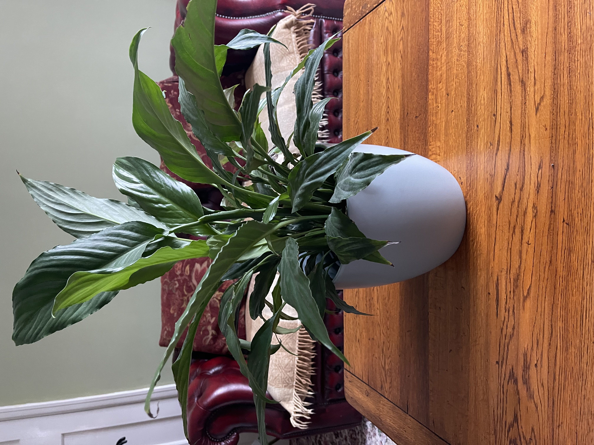

Benefits Of House Plants
Here we will talk about different benefits that house plants bring. Plants can help productivity, plants increase producitivity and creativity it has been found that with plants nearby more work is completed.
Plants bring oxygen into the air, as you may know plants bring oxygen back into the air which helps to refresh air in your home. Unfortunately this is the most plants will do to 'purify' air in your home, you can read more on that here
A simple task such as repotting a houseplant can help relive stress. Since they are small there is little hassle when repotting or even spending time to water it.
